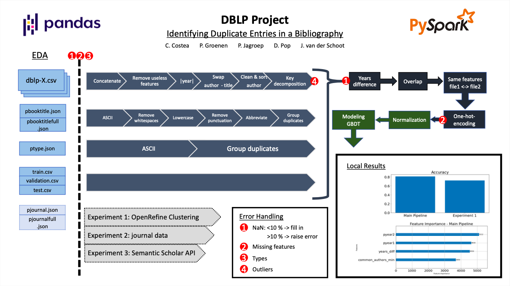

Duplicates Identification
Mar 2022 ~ MSc Course "Big Data"
Length: 2w (at 0.25 FTE)
Programming language: Python (Pandas, NumPy, PySpark SQL, PySpark ML, RE, NLTK,
os, Matplotlib)
Data:
- "dblp-*" files containing bibliographic data about research
papers, such as the author(s), publication year, and publisher
- json files pointing to additional features for the book title, journal, and type of the paper
- train, validation, and test sets composed of the keys of the compared papers, and, for the
train set only, the label variable denoting whether the respective papers are duplicates
Problem description:
Design and implement a scalable Machine Learning pipeline that identifies duplicate entries in a
bibliography
Approach & Results:
Initially, the data files were inspected individually to notice error patterns. Then, checks
addressing missing values, features, and their types were implemented to improve the reusability
of the pipelines and allow them to respond or recover from errors when other data sets are
used. Next, the feeds were designed using PySpark, as one can see in the image below with
dark blue. Afterward, they were merged, and additional features were derived, such as
the difference in years or the overlap score of authors of two documents. Finally, the
categorical features were one-hot encoded and fed together with the numerical ones to a
Gradient Boosted Trees model, scoring an 82% accuracy on the test data.
